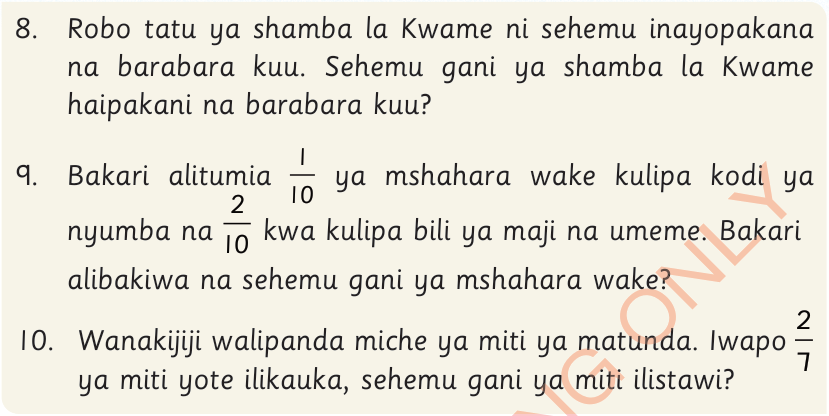
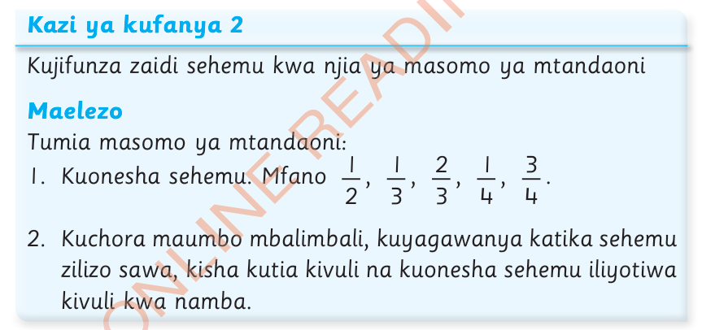
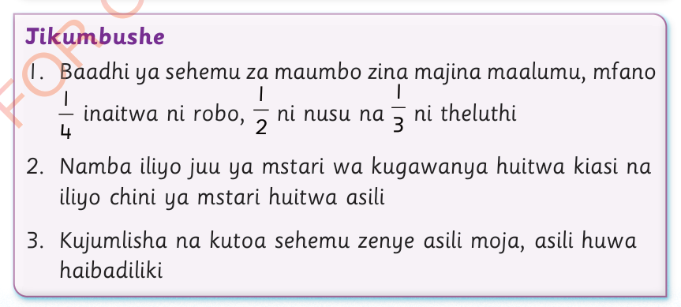

8.
Robo tatu ya shamba la Kwame ni sehemu inayopakana na barabara kuu.Sehemu gani ya shamba la Kwame haipakani na barabara kuu?
9.
Bakari alitumia ya mshahara wake kulipa kodi ya nyumba na kwa kulipa bili ya maji na umeme.Bakari alibakiwa na sehemu gani ya mshahara wake?
10.
Wanakijiji walipanda miche ya miti ya matunda.Iwapo ya miti yote ilikauka, sehemu gani ya miti ilistawi?

Kazi ya kufanya 2
Kujifunza zaidi sehemu kwa njia ya masomo ya mtandaoni
Maelezo
Tumia masomo ya mtandaoni:
1. Kuonesha sehemu.
Mfano , , , , .
2. Kuchora maumbo mbalimbali, kuyagawanya katika sehemu zilizo sawa, kisha kutia kivuli na kuonesha sehemu iliyotiwa kivuli kwa namba.

Jikumbushe
1. Baadhi ya sehemu za maumbo zina majina maalumu, mfano inaitwa ni robo, ni nusu na ni theluthi
2. Namba iliyo juu ya mstari wa kugawanya huitwa kiasi na iliyo chini ya mstari huitwa asili
3. Kujumlisha na kutoa sehemu zenye asili moja, asili huwa haibadiliki